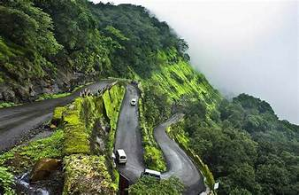
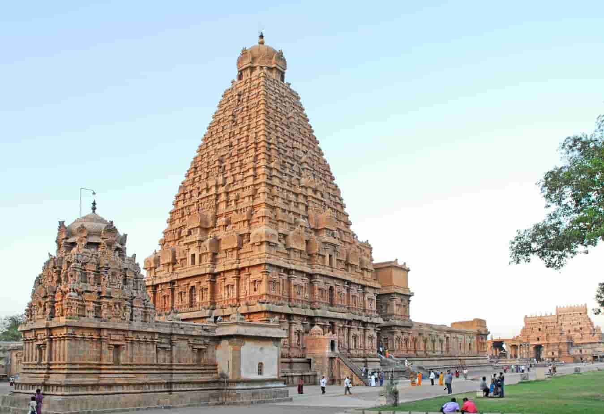
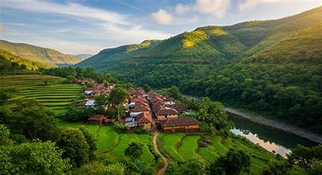
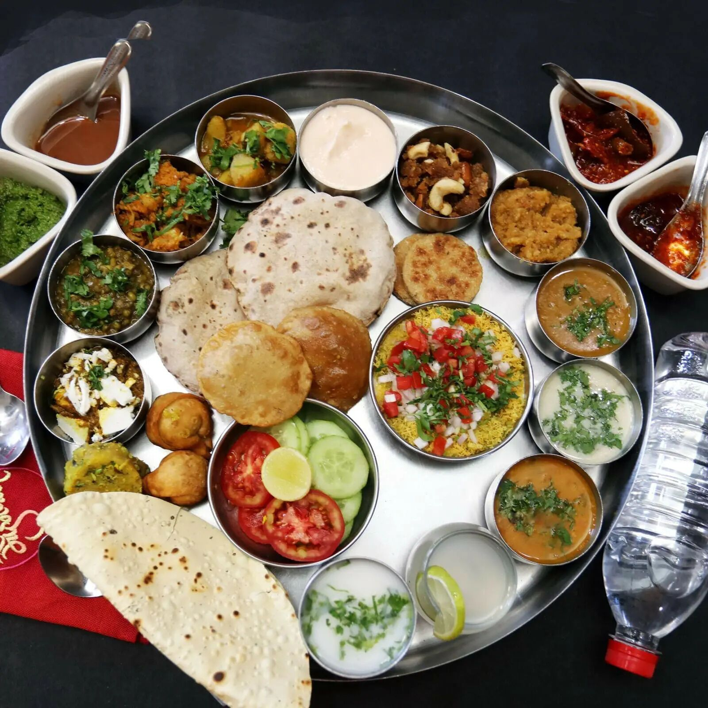

Discover the Beauty of Beyond the Famous Places Here...
Explore the hidden gems of Maharashtra! Maharashtra has a lot to offer beyond its famous tourist destinations. From serene hill stations to ancient temples, from picturesque villages to delicious local cuisine, there's something for everyone to discover. The state is filled with surprises waiting to be uncovered. Explore the lesser-known spots and experience the true essence of Maharashtra! Maharashtra is a state of many wonders, waiting for you to explore.
Maharashtra is a beautiful state in India known for its rich history, natural beauty, ancient temples, and colourful traditions. Beyond its famous tourist attractions, there are many hidden places waiting to be discoverd. From peaceful villages to beautiful waterfalls, every destination has its own special charm.
The following are some of the hidden gems of Maharashtra that you can explore...
|
 Hill Stations |
 Temples |
 Villages |
 Food |